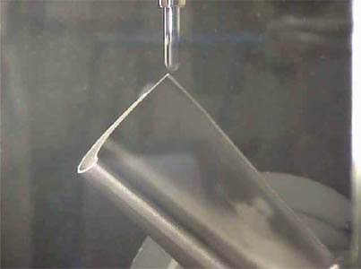

|
Çok
Eksenli Takým Yolu Hesaplanmasý (Multi-axis tool path planning)
- Kesici
takým posizyon noktalarýnýn (Cutter Location) belirlenmesi
(Generating cutter location - CL- points and cutter location
file)
- En
uygun iþlem parametrelerinin belirlenmesi (Determination
optimum multi-axis operation parameters)
- Tezgah
kodlarýnýn oluþturulmasý (Generation of Gcodes: Post-processing)
Belki
de en kritik olan ikinci aþamada ise doldurulan bölgelerden
dolgu malzemesini kaldýrmak için uyarlamalý (adaptive) takým
yolu belirlenmesi ve CNC tazgahýna NC kodu üretilmesidir.
Genelde üç aþamalý gerçekleþtirilen bu bölümde, ilk olarak
doldurulan bölgenin kanat yüzeyi üzerindeki konumu ve bölgenin
yüzeysel yapýsýna göre iþleme stratejisi (çok eksenli eðri
iþleme, izoparametrik iþleme, çok eksenli yanal iþleme vb.)
belirlenir ve daha sonra belirlenen stratejiye baðlý olarak
takým yolunun hesaplamasý ve en uygun iþleme parametrelerinin
(takým meyil açýlarý, takým yolu aralýðý vb.) belirlenmesi
gerekmektedir. Elde edilen takým temas noktalarýnýn (cutter
contact points) ve takým posizyon noktalarýnýn (cutter location
points) NC kodlara çevrilmesiyle kaynak edilmiþ türbin kanadý
iþlenmeye hazýr olur. Sözü edilen iþlemleri yapabilecek birçok
CAD/CAM yazýlýmý mevcuttur. Ancak, gereksinimleri karþýlayabilecek
ve istenilen iþi yapabilecek doðru yazýlýmýn seçilmesi diðer
bir önemli noktadýr.
Deðiþik
CAD/CAM Yazýlýmlarýnda Geliþtirilmiþ Takým Yollarý

Bir Türbin Kanat Ucunun 5-Eksenli Frezede Ýþlenme Görüntüsü
Sonuç
Türbin
kanatlarýnýn onarým teknolojisindeki yeni arayýþlar ve projeler,
kaçýnýlmaz olarak havacýlýk sanayi, türbin üreticileri ve
savunma sanayisi tarafýndan büyük yatýrýmlarla tüm dünyada
desteklenmektedir. Servis, bakým ve onarým; türbin motoru
üreticilerinin en önemli sorumluluklarýndan biridir. Günümüzde
türbin kanatlarýnýn bakým ve onarýmý, kalifiyeli elemanlar
tarafýndan yapýlmaktadýr.
Örneðin kanatlarýn kaynak edilmesi
özel üretilmiþ bilgisayar kontrollü tezgahlar ile yapýlmakta;
fakat doldurulan kýsýmlarýn alýnmasý veya iþlenmesi el taþlamasý
metodu ile yapýlmaktadýr. Bu durum; yüksek iþçilik maliyetine,
düþük doðruluk oranýna, daha fazla iþlem zamanýna ve tabii
ki düþük verimliliðe neden olmaktadýr. Daha da önemlisi titanyum
ve nikel malzeme tozlarýnýn nüfus edilmesi sýrasýnda ve karmaþýk
bir geometriyi el ile iþleme esnasýnda meydana gelebilecek
iþ kazalarýdýr; diðer bir ifadeyle 'insan saðlýðý' faktörüdür.
Dolayýsýyla, türbin kanadý restorasyonun ileri CAD/CAM ve
kaynaklama teknolojileri kullanýlarak gerçekleþtirilmesi;
bu alanda son zamanlardaki teknolojik bir eðilim olarak göze
çarpmaktadýr. Ön muayene ve son mauayene arasýnda gerçekleþtirilen
tüm iþlemlerin otomasyonu ise önemli ve araþtýrma yapýlmasý
gereken noktalardan biridir.
Sonuç olarak bu yeni eðilimin,
her zaman üretimini ve verimliliðini arttýrmak isteyen firmalarýn
rekabet gücüne katký saðlýyabilecek bir teknojik yaklaþýmdýr
demek mümkündür.
Kaynaklar
1.
Turbomachinery Products: Processes,
www.tmp.goodrich.com/processes.shtml
2.
Krause, S., An advanced repair technique: laser powder build-up
welding, Sulzer Technical review, 4, 2001.
3.
Llyod A., C., Advanced Refurbishment and Life Extension Technologies
for Industrial Gas Turbine Components, Third International
EPRI Conference on Welding and Repair Technologies for Power
Plants', Scottsdale, AZ, 1998.
4.
TTL Refurbishing Gas Turbine Components,
www.ttl-gas-turbine.com
5.
Mullins, P., Adaptive machining to improve blade repair, Diesel
& Gas Turbine Worldwide, September, pp.78-79 2001.
6.
Dix B. Adaptive geometry manufacturing technology,
www.ttl-gas-turbine.com/adaptive_technology.htm
7.
Albrecht A., Manufacturing technology for turbine blades,
Diesel & Gas Turbine Worldwide, June 1995.
8.
Five-axis Machining, custom software speed turbine blade refurbishment,
Manufacturing Engineering, vol.126, No.5, 2001.
9.
Bremer C., Adaptive strategies for manufacturing and repair
of blades and blisks, Proceedings of ASME Turbo Expo 2000:
45th ASME International Gas Turbine & Aero-engine technical
Congress, Munich, 2000.
10.
Bremer C., Adaptive-welding strategies for repair and overhaul
of turbine blades and blisks.
www.bct-online.de
Ek
Bilgi: Türbin kanadý onarýmýnda kullanýlan otoinþa cihazlarý:
- POM,
DMD (Direct Metal Deposition, Direkt Metal Yýðma)
- H
& R Technology Inc., PMD (Precision Metal Deposition
- Hassas Metal Yýðma)
|